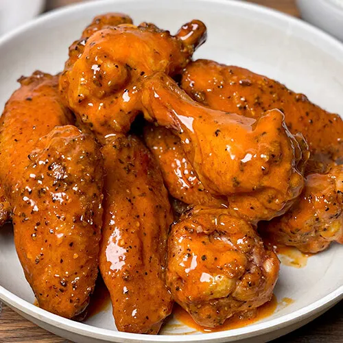

Wings

Description
These simple air fryer wings are great for game day or any day!
Ingredients
- 1 lb of chicken wings.
- Salt, pepper, garlic powder, onion powder, baking powder.
- Franks Red Hot.
- Butter.
Steps
- Bring the wings to room temp and pat them dry.
- Mix your dry ingredients, just eyeball it, and coat your wings.
- Place wings in airfryer at 400 for 10 minutes, flip and continue to cook for 10 more minutes.
- Add a tablespoon of butter and as much Franks as you can handle in a large bowl.
- Place wings in the bowl and toss.